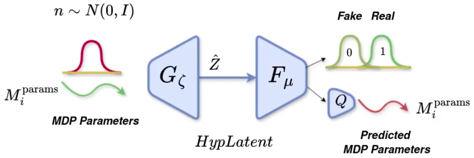
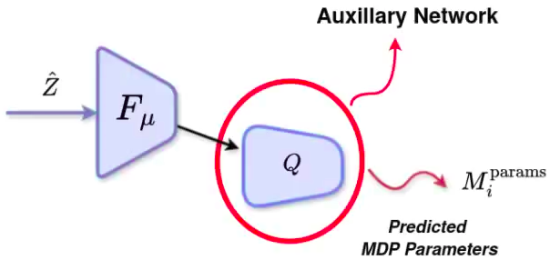
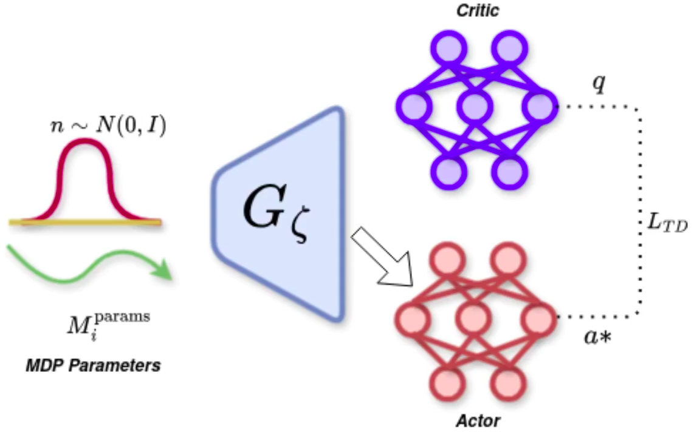
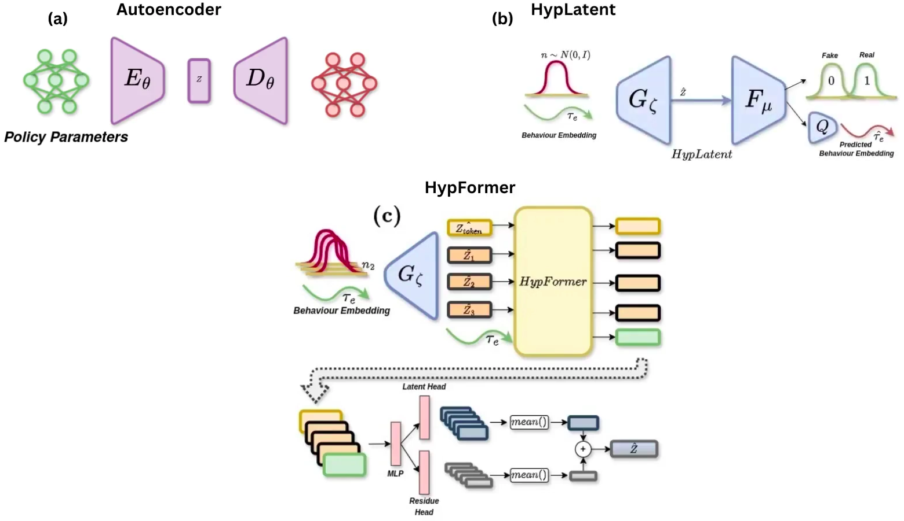

Abstract
Reinforcement Learning (RL) often requires large number of environment interactions to generalize to unseen in-distribution tasks, particularly when policy initialization is suboptimal. Existing meta-RL and transformer-based methods adapt to unseen tasks with few demonstrations but usually require training on many tasks (usually 85% of tasks in task distribution). To address this challenge, we propose a novel framework that leverages adversarial hypernetworks to generate strong policy initializations on unseen tasks, enabling rapid adaptation with minimal interactions, even when pre- trained on as minimum as 30% of tasks. We demonstrate the effectiveness of our approach on MuJoCo continuous control tasks, showcasing strong zero-shot policy initialization and rapid adaptation on unseen tasks. Additionally, we demonstrate that our framework can be extended to Multi-Task RL (MTRL) setting, where it outperforms existing hypernetwork based methods on manipulation tasks from MetaWorld benchmark. Through rigorous experimentation, we show that our frame- work outperforms the prior competitive baselines from in- context RL and meta RL on zero-shot transfer and enables efficient adaptation to unseen in-distribution tasks.
Overview

Section 1: Zero Shot Initialization + Efficient Adaptation
Components:
- HypLatent. An generative adversarial framework with generator trained to predict policy parameters given the MDP parameters of the given task as input. The discriminator trains in parallel with the generator to discriminate synthetic parameters from the ground truth parameters, thereby forcing the generator to learn to predict parameters closer to the ground truth. 
- Auxillary Network (Q). This is a neural network that learns to reconstruct the MDP parameters, given an output token from the discriminator. Through this network, we ensure that the information related to the task (represented by MDP parameters) is not lost as the network trains with time, reducing the chance of mode convergence and other associated local minima 
Zero-shot Policy Initialization. For a given Mujoco Continuous environment, this framework is trained on a subset of tasks. The subset size is varied from 30% to 85% of the total tasks. The trained model is then tested on unseen tasks from the same environment. We show that the generator model is able to generalize zero-shot to unseen tasks, even when trained on as minimum as 30% of tasks.
Efficient Adaptation. We propose to use TD-regularized actor-critic method to adapt the zero-shot policy to the unseen task. We show that the policy is able to adapt to the unseen task with minimal interactions.
We tested our framework on Mujoco's Hopper and Ant-Direction environments. Please refer to the paper for detailed section on experiments.
Section 2: Extension to Multi-Task RL
MTRL Setting. We consider an agent interacting with an environment to perform multiple tasks sampled from a task distribution. Multi-Task Reinforcement Learning (MTRL) can be modeled as a Block Contextual Markov Decision Process (BC-MDP), where the context space represents shared information across tasks, the state space is universal, the action space is common, and each context maps to its specific task parameters. The goal of MTRL is to learn a single policy that maximizes the cumulative expected return across all tasks. While tasks share a universal state space, individual tasks may have distinct state spaces, as seen in benchmarks like MetaWorld, where variations arise due to differences in object interactions and behaviors.
Components:
- Autoencoder. For MTRL tasks, instead of directly training the generator to predict policy parameters, we choose to operate in the latent space, similar to the paper Make-An-Agent. For this, we use an autoencoder to encode the policy neural network parameters as latent embeddings. The encoder is trained to predict latent embeddings given the policy parameters, and the decoder is trained to reconstruct the policy parameters given the latent embeddings. The autoencoder is trained with a reconstruction loss and a KL divergence loss to ensure that the latent embeddings are close to a standard normal distribution.
- HypLatent. An generative adversarial framework with generator trained to predict latent embeddings of policy parameters (unlike the previous section where the generator predicted policy parameters directly). The discriminator trains in parallel with the generator to discriminate synthetic latent embeddings from the ground truth latent embeddings, thereby forcing the generator to learn to predict latent embeddings closer to the ground truth.
- Using Behavior Embeddings to Represent the Task. Unlike previous section, where each task is represented by its MDP parameters, we choose to represent the task by its behavior embeddings, as it was proved to be more efficient representation for MTRL tasks (citing Make-An-Agent). Thus, HypLatent's generator takes the behavior embedding as input, instead of MDP parameters, for MTRL tasks.
- Auxillary Network (Q). This is a neural network that learns to reconstruct the behavior embeddings (unlike the previous section, where it reconstructs MDP parameters of the task), given an output token from the discriminator. Through this network, we ensure that the information related to task (represented by behavior embeddings) is not lost as the network trains with time, reducing the chance of mode convergence and other associated local minima
- HypFormer. The policy parameters predicted by the generator/hypernetwork may not always be close to the ground truth policy embedding. To enhance accuracy, we perform soft-weighted aggregation, prioritizing latent embeddings that are closer to the ground truth. Directly regressing the refined embeddings from HypFormer led to unstable training; thus, we introduce two MLP branches: the latent head and the residue head. The latent head is trained to predict the ground truth latent policy embedding, while the residue head learns the residual between the generator's latent policy embedding and the ground truth. To ensure consistency between these heads, we apply a consistency loss. For a detailed explanation of individual loss terms and notations, please refer to Section V(b) of the paper. 